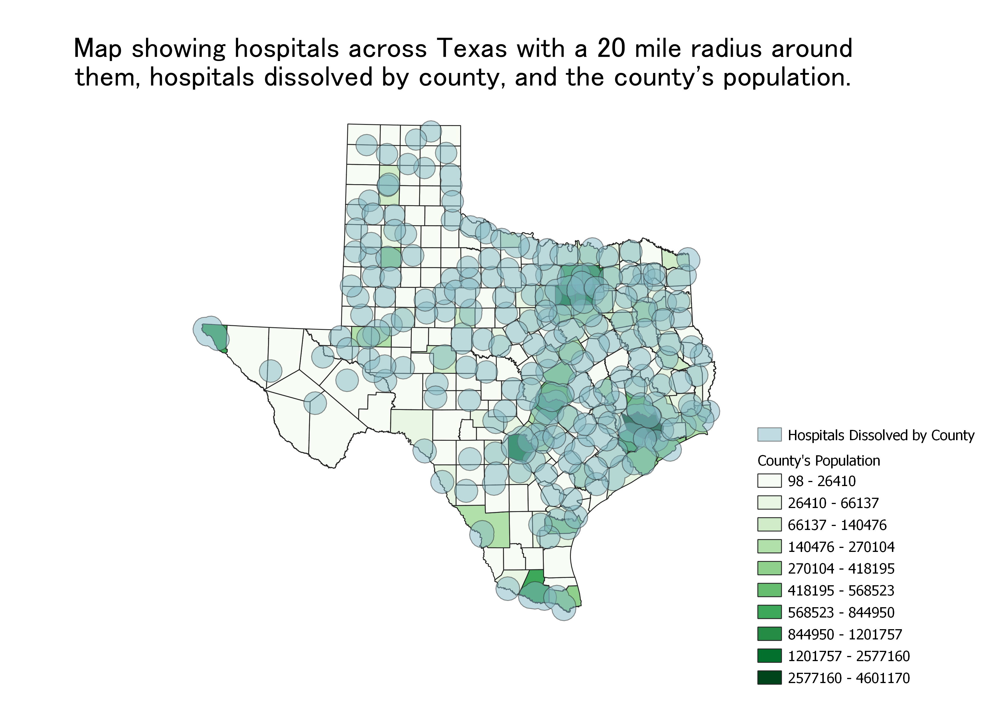

Question: What areas of Texas are covered by a hospital assumiing hospitals can cover everyone within a 20 mile radius?
The map is looking at areas in Texas that are covered by a hospital.
The dataset contained the location information for hospitals across all 50 states. It was filtered to only show Texas hospitals.
Buffer was used to form a 20 mile radius around the hospitals.
In areas with high population densities there were multiple hospitals present so I used dissolve to join those areas using the same zipcode but because there
were multiple hospitals in the area, it was hard to see the map and the information below it. I also tried dissolving by city but the same thing happened.
Dissolving by county gave me a better result even though it is still hard to see the data represented on the map.
Natural breaks was used to classify the population to show areas with higher population densities vs lower population densities.

Link to population data
CSV file
Link to hospitals data